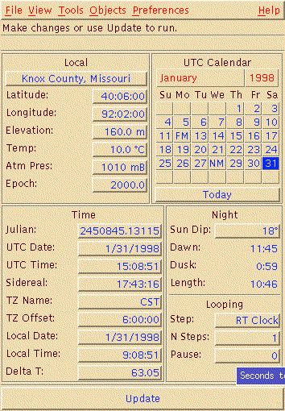
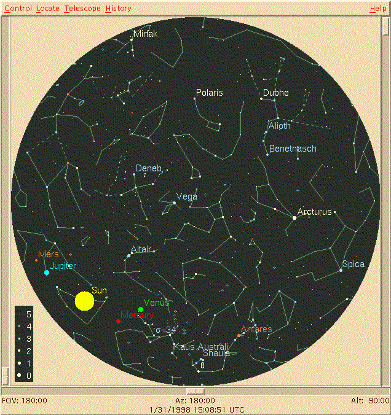
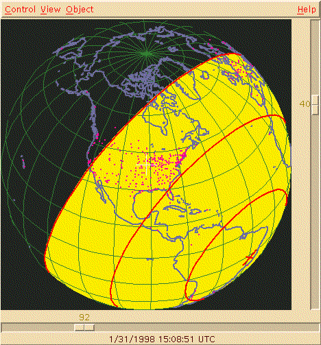

![[ TABLE OF CONTENTS ]](../gx/indexnew.gif)
![[ FRONT PAGE ]](../gx/homenew.gif)


ephemeris n., pl. ephemerides 1. A table giving the coordinates of one or a number of celestial bodies at a number of specific times during a given period. 2. A publication that presents a collection of such tables; an astronomical almanac.
The above definition came to mind when, some time ago, I happened upon a Debian package called xephem while browsing the contents of a distribution CD. At the time I dismissed any thought of installing it; I could visualize (falsely, as I later learned) a simple X application displaying scrollable lists of sun, moon, and planet rising and setting times for various latitudes. This sort of information is easily available from printed ephemerides and hardly justified installing a probably old package.
A salient aspect of free software is that it's not advertised, and word-of-mouth has its limitations. News of an application with wide appeal, such as an editor or file-manager, will eventually be spread via the internet, but a program which occupies a specialized niche might not receive the attention it deserves.
Some time later I saw a brief description of xephem in a usenet posting which was enough to spark my curiosity. After trying it out, I was impressed, and thought the word should be spread.
Xephem is a Motif-based X application which goes far beyond the name's implication. It's a multi-purpose astronomical program which can present detailed, zoom-able star-charts as well as views of the earth, moon, planets and the entire solar-system. These views can be from any location on Earth, at any time in the past or future.
This application can be effective on several levels. The casual star-gazer can consult xephem just to see what planets and constellations are visible on a certain night, and perhaps print out a star-chart. As a teaching aid xephem's graphical and animated displays could spark a student's interest. The serious amateur astronomer can set up a link between a telescope and the program, so that the sky-view displays whichever spot the telescope is also seeing.
This review will be more comprehensible if a screenshot is presented first.
The first window which appears when xephem is started is the control
window:

In this window various parameters, such as location, date, and time, can be set. From the menubar the view windows can be summoned, as well as which of the various astronomical databases (included in the distribution) should be loaded into memory. These databases are quite a useful resource to have available. They include the Messier and NGC databases of deep-sky objects, along with databases of asteroids, comets, and satellites. Updated versions of the latter two are available on the xephem web-pages.
Here is a screenshot of a skyview window:

This window is much more than a simple star-chart of a certain date, time, and location. Right-mouse-button clicking on a star or other astronomical object summons a small window showing various facts about the object. Zooming in can also be done with the mouse, and a zoomed view can be panned using the scroll-bars. A variety of viewing options can be set from the menubar. The constellation names and outlines can be shown, and if any of the xephem databases are loaded the objects in them will be visible, if desired.
One view window which I find particulary interesting is the earth view. A
representation of the earth from an orbital viewpoint is shown, with the sun's
illumination and current zenith-point highlighted. This is updated in
real-time, and equivalent views displaying the zenith location and area
illumination of either the moon or the other planets are menu options.

Another view-window displays the solar-system in schematic form. This and the earth-view windows can be animated, a sort of cartoon-movie which shows the relative movements of the various celestial objects.